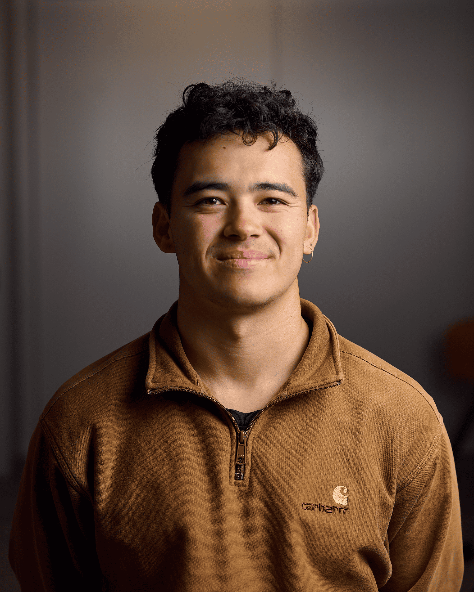

The heavy is the root of the light; the unmoved is the source of movement. — Lao Tzu
Klicke, um fortzufahrenZwischen Breaks und Code bewege ich mich in zwei Welten, die mehr gemeinsam haben, als man denkt. Seit ich elf bin, tanze ich Breaking – fast 20 Jahre und mehrere nationale Titel später ist der Battle noch immer der Ort, an dem ich am klarsten denke. Heute gilt dieselbe Energie dem Code: Struktur, Wiederholung, der Mut, etwas Neues zu probieren, bis es sitzt. Aktuell vertiefe ich mich in Wirtschaftsinformatik.
